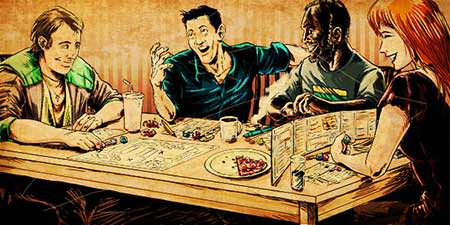

Role Playing Game
O tão falado RPG, nada mais é do que a abreviação do termo "Role Playing Game" que, em uma tradução literal para português, significa "Jogo de Interpretação de Papéis". Mas o que isso significa? Bom, para começarmos, é necessário dizer que o RPG ao qual nos referimos é o de mesa, jogado com diferentes dados, fichas de personagens, estatísticas, referências do mundo pop e/ou da vida dos jogadores. Dito isso, o RPG é um jogo onde o jogador cria um personagem, suas características físicas e comportamentais e sua história.
Jogadores
O RPG é jogado em grupo e cada jogador constrói o próprio personagem baseado no sistema de regras a ser utilizado. Para isso, são utilizadas fichas, que são uma espécie de formulário, para definir como é o personagens. Na ficha, você econtra os dados que definem o personagen, tais quais: o nome do personagem, do jogador, raça (já que nos mundos fantasiosos é normal haver outras raças inteligentes fora os humanos), a classe, a aparência, a tendência (o quão é bom e o quanto segue as leis e normas), além, é claro, dos status e perícias, que constantemente definem o desempenho do personagem. A ficha é constantemente atualizada ao longo da aventura.
Mestre
Com um jogo onde há tantas alternativas e possibilidades, é normal que haja algo que regule as regras. No caso do RPG, além do livro de regras, um dos jogadores desempenha o papel de mestre. Mas o que faz o mestre? O mestre é responsável por mediar a aventura através das regras aplicáveis segundo o próprio sistema, além de permitir que jogadores façam ou não determinada ação e como aplica as consequências dessas ações. O ideal é que os mestres tenham apenas um esqueleto da história para deixar os jogadores livres para seguirem a o rumo que quiserem, por isso é importante que saiba improvisar e conheça muito do jogo, mas deixaremos isso para um espaço especial para o mestre.